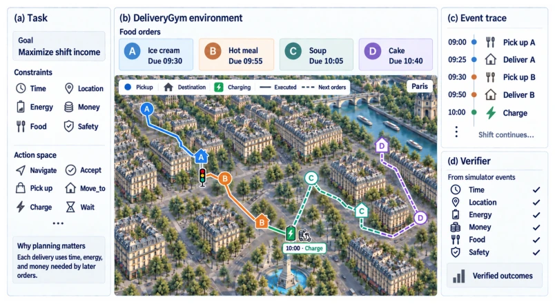
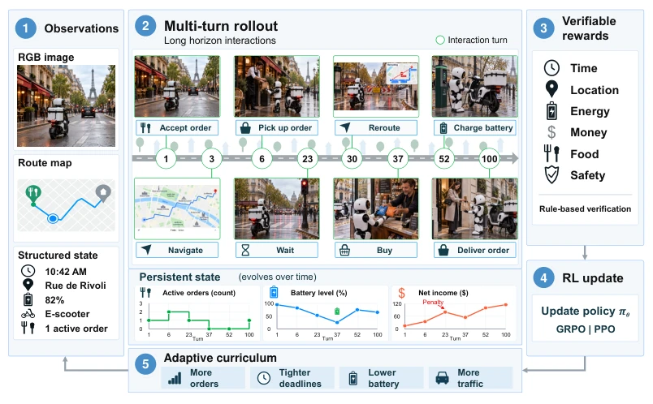
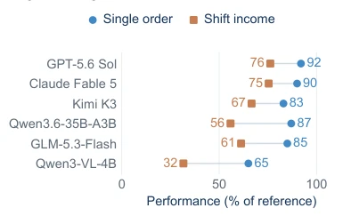
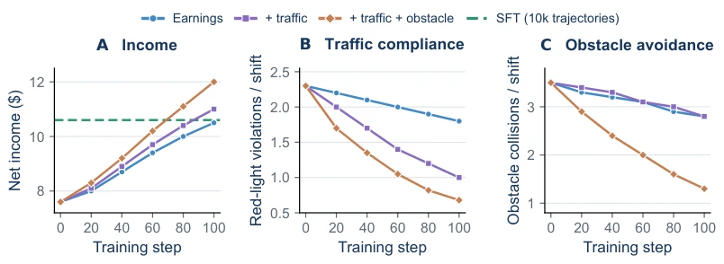
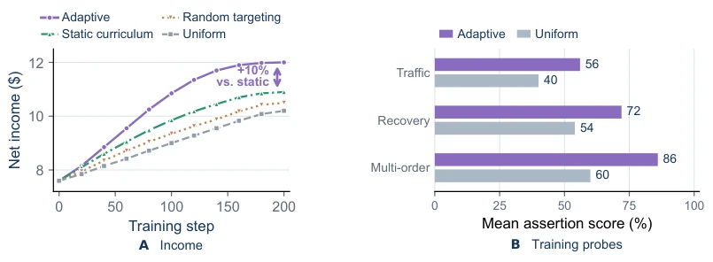
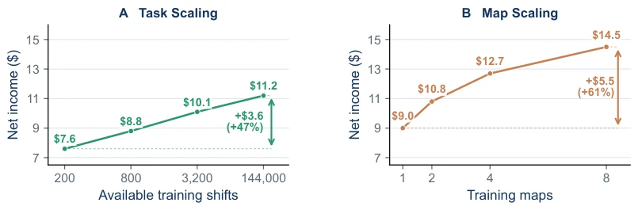
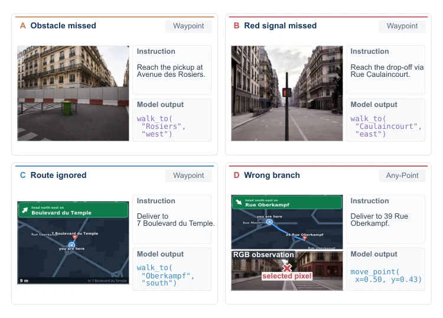

This paper transforms DeliveryBench from a "testbed" to a "training ground", creating DeliveryGym. The highlight lies in transforming delivery into a long-horizon RL problem, not only looking at single-point success but also considering the overall accounting (time, energy, money). Using UE5 simulation and implementing adaptive curriculum, it is quite rigorous. However, a critique is that it remains simulation; real-world physical interactions and uncertainties are not fully covered, and it relies on specific city maps, raising doubts about generalization. However, for VLM long-horizon planning training, this is indeed a scarce RL environment, at least superior to pure benchmarks, enabling the learning of "reserve strategy" policies. It reveals the pain point of current models being strong in single tasks but weak in long-horizon planning; for instance, Qwen3-VL-4B saw a significant income increase after RL training, indicating that pure SFT is insufficient and requires environment feedback. In conclusion, this is a practical RL sandbox, but there is still a distance from real-world deployment.
研究动机Motivation
现有具身 AI 基准如 DeliveryBench (Mao et al., 2025) 侧重评估而非训练，缺乏 RL 所需的可执行动态。长程规划需要环境记录决策后果（如能量消耗、时间延迟），而不仅是最终状态。现有模拟器如 BEHAVIOR-1K (Li et al., 2024) 多关注单任务或短程交互，难以支持跨订单的资源耦合。本文旨在构建一个支持在线 RL 的环境，让智能体从完整轨迹的反馈中学习，解决“单任务成功不等于长程盈利”的问题。现有工作多依赖静态评估，无法提供持续的环境反馈，导致智能体难以学习资源管理策略。
Existing embodied AI benchmarks such as DeliveryBench (Mao et al., 2025) focus on evaluation rather than training, lacking executable dynamics required for RL. Long-horizon planning requires the environment to record decision consequences (e.g., energy consumption, time delay), not just the final state. Existing simulators such as BEHAVIOR-1K (Li et al., 2024) mostly focus on single tasks or short-term interactions, making it difficult to support cross-order resource coupling. This paper aims to build an environment supporting online RL, allowing agents to learn from feedback of complete trajectories, solving the problem that "single-task success does not equal long-term profitability". Existing work mostly relies on static evaluation, unable to provide continuous environment feedback, causing agents to find it difficult to learn resource management strategies.

Figure 1: DeliveryGym illustrated through a courier shift in Paris. Agents select and deliver orders under time, resource, food quality, and safety constraints. Orders share a clock, resource balances, and active commitments across deliveries. The event trace records executed actions; simulator events determine constraint checks and net income.
The overall process is based on SimWorld Studio (UE5) to construct a 3D environment of 13 city maps. Agent interacts via multimodal tools, receiving RGB, maps, and structured states (time, energy, funds). RL training adopts GRPO/PPO, rewards based on simulator events (income, safety penalties), requiring no manual labeling. Adaptive curriculum dynamically adjusts task difficulty based on policy weaknesses (e.g., traffic violations, obstacle avoidance), 70% of samples generated targeting weaknesses. Key innovation is persistent state constraints, time, energy, funds shared across orders, simulating real workflows. Environment supports parallel rollout, improving training efficiency. Tools include order selection, navigation, resource management. Simulator records event trajectories as verification basis, forming an "interaction-consequence-reward-update" closed loop. Specific reward formula includes base payment, tips, and violation deductions, safety penalty weight adjustable.

Figure 2: Online training loop in DeliveryGym. (1) Agents observe street views, a route map, and structured state. (2) Tool actions change orders, energy, and income throughout a multi-turn rollout. (3) The verifier computes rewards from simulator events, (4) providing feedback for policy updates. (5) The adaptive curriculum uses rollout failures to adjust task difficulty and diversity, including order load, deadlines, battery levels, and traffic, for subsequent training.
Dataset contains 13 maps, 130 replayable shifts. Baselines include GPT-5.6 Sol, Qwen3-VL-4B, etc., 6 models. Metrics are net income, safety violations. Results show RL training increased Qwen3-VL-4B net income by 54.3%, adaptive curriculum improved by 16.5% over uniform sampling. Extending training maps and task pool also increases income. Found high single-task success rate does not represent good long-horizon planning, Any-Point mode visual grounding weakness leads to income crash. Additionally, safety reward design can reduce violations and indirectly increase income, proving constraint awareness is crucial for long-term returns.

Figure 3: Single-order success and shift in- come as percentages of the search oracle results (100% success rate and $24 income).

Figure 4: Effects of reward design on validation shift performance. (A) Net income; (B) red-light violations; (C) obstacle collisions. RL variants share initialization and training budgets.

Figure 5: Effects of an adaptive curriculum on learning. (A) Validation shift income under four training-task sampling strategies. (B) Mean assertion scores on training probes for the targeted skill at each phase endpoint.

Figure 6: Validation shift income under environment scaling. (A) Task scaling varies the available task pool within one city. (B) Map scaling varies the number of training cities. Both comparisons keep the training interaction budget fixed.

Figure 7: Recorded observation–action pairs. A–C use Waypoint; D uses Any-Point, with the se- lected pixel marked on the RGB view.